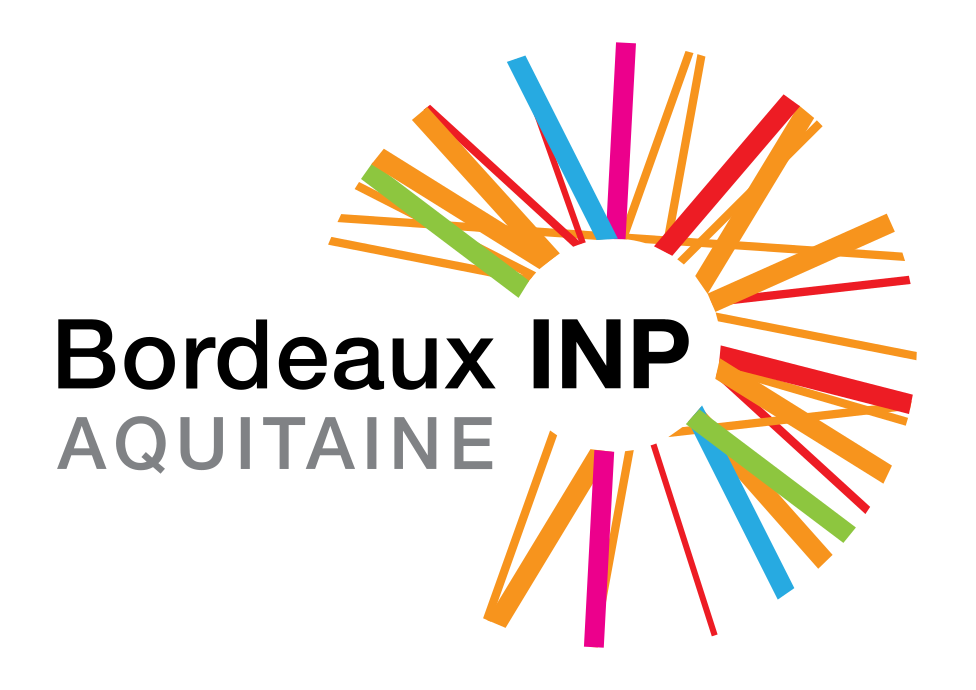

Collaborer avec Robotique et Apprentissage
La spécialité Robotique et apprentissage de l’ENSEIRB-MATMECA et ENSC a mis en place plusieurs actions permettant de faciliter la collaboration entre les étudiants, enseignants et les organismes extérieurs (entreprises innovantes, laboratoires de recherche, associations ...).
1. AI4Industry : workshop sur l'Intelligence Artificielle
AI4Industry est une formation à l'Intelligence Artificielle au format évenementiel : comportant des conférences, travaux pratiques sur des usecases industriels et salon de rencontre. Les organismes extérieurs peuvent, selon vos besoins :
- Proposer un sujet de travaux pratique (TP) orientés sur leur métier : consulter l'appel à usecase et co-encadrer le travail des élèves ingénieurs
- Rencontrer les étudiants pour recruter des stagiaires ou emplois : consulter le dating
- Se former à l'Intelligence Artificielle en assistant aux TP
2. Apporter un sujet de projet étudiant d'ingénierie robotique
Bordeaux INP diplôme chaque année une vingtaine d'étudiants spécialisés en robotique via l'option de 3e année "Robotique et Apprentissage". Dans ce cursus, ils ont à réaliser un projet d'ingénierie robotique par groupe de 2 à 3 étudiants dont les sujets sont proposés et co-encadrés par des entreprises.
Si votre organisme souhaite proposer un sujet, le planning est le suivant :
- Maximum fin septembre : les organismes proposent leurs sujets de projet via la procédure (consulter les anciens projets pour référence)
- Maximum fin septembre : Nous mettons en ligne des sujets de projets sur le site meet-up-educate.fr ¹
- 7 octobre 2022 : l'entreprise présente son sujet de projet dans un créneau de 3h aux étudiants et enseignants
- Les étudiants choisissent ensuite le sujet sur lequel ils veuillent travailler
- Octobre à Noël : étude de l'état de l'art (fonctionnel et scientifique) sur le sujet de projet choisi
- Mi-janvier à mi-février : 1 mois de réalisation d'un prototype ou d'une simulation sur le sujet de projet choisi
- Mi-février : soutenance de fin de projet et rendu du projet sous forme de code documenté sur Github.
¹ meet-up-educate.fr est également utilisé par des formations d'autres écoles et d'autres spécialités pour soumettre leurs sujets de projets pédagogiques.
3. ROS4PRO : Former ou se former à l'écosystème ROS (Robotique Opensource)
ROS4PRO est une formation à l'écosystème ROS à destination des ingénieurs, développeurs ou chercheurs d'emplois en ingénierie. Selon votre besoin, vous pouvez :
- Nous rejoindre comme formateur, pour dispenser des formations à ROS selon vos compétences et votre couverture territoriale, de façon rémunérée
- Vous former à ROS en assistant à la formation (avec possibilité de financement par votre OPCO ou Pôle Emploi)